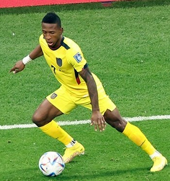

| Nombre | Posición | Edad | Bibliografía | Portada |
|---|---|---|---|---|
| Alan Franco | Defensa central | 27 |
Alan Franco es un defensor central ecuatoriano nacido en 1998. Destaca por su solidez defensiva, capacidad aérea y liderazgo en la zaga. Ha jugado en clubes como Independiente del Valle y Atlético Mineiro. Actualmente juega en Talleres de Córdoba, Argentina. |
|
| Ángelo Preciado | Lateral derecho | 25 |
Ángelo Preciado es un lateral derecho veloz y técnico. Juega en el Genk de Bélgica, aportando tanto en defensa como en ataque. |
|
| Cristian Pellerano | Mediocentro | 38 |
Mediocampista con gran experiencia, referente en Independiente del Valle, campeón de Copa Sudamericana. |
|
| Enner Valencia | Delantero centro | 32 |
Máximo goleador histórico de la selección ecuatoriana, con paso por ligas de Inglaterra, México y Turquía. |
|
| Xavier Estupiñán | Lateral izquierdo | 31 |
Reconocido por su entrega en defensa y ataque, ha militado en clubes nacionales e internacionales. |
 |
| Joel Valencia | Mediocentro ofensivo | 29 |
Destaca por su técnica y visión de juego. Fue elegido mejor jugador de la liga polaca en 2019. |
|
| Kendry Páez | Delantero | 17 |
Joven promesa fichada por el Chelsea. Se espera que brille en Europa en los próximos años. |
|
| Moisés Caicedo | Mediocentro defensivo | 22 |
Pieza clave en la Premier League y en la selección ecuatoriana. En 2023 se convirtió en el fichaje más caro de Ecuador al llegar al Chelsea. |
|
| Nilson Angulo | Mediocentro ofensivo | 21 |
Joven talento ecuatoriano con gran proyección en Europa. Considerado una de las joyas emergentes del fútbol nacional. |
|
| Patrik Orozco | Extremo derecho | 20 |
Extremo rápido y habilidoso, reconocido por su talento en torneos juveniles. Se proyecta como futuro titular en la selección absoluta. |
|
| Piero Hincapié | Defensa central | 22 |
Defensa sólido y versátil del Bayer Leverkusen, fundamental en el esquema defensivo de Ecuador. |
|
| William Pacho | Defensa central | 22 |
Juega en el Eintracht Frankfurt y es parte de la renovación defensiva de la selección ecuatoriana. |